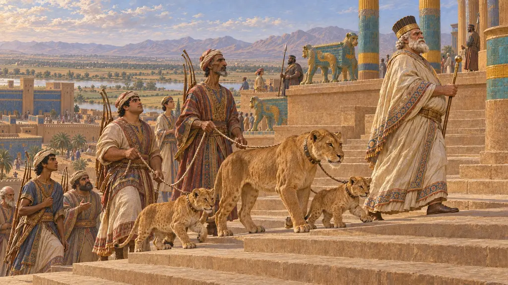
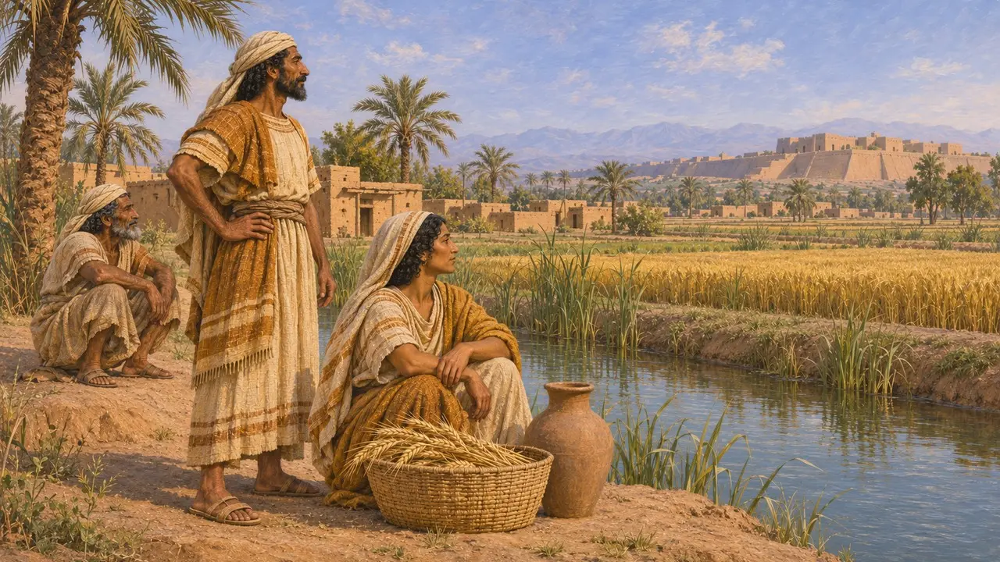
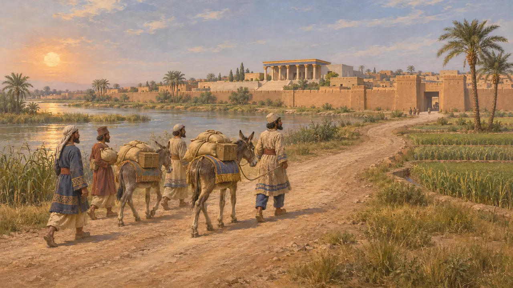
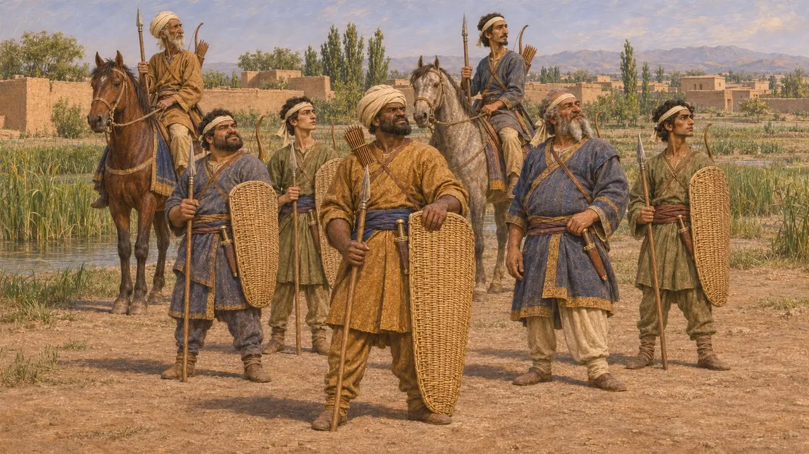
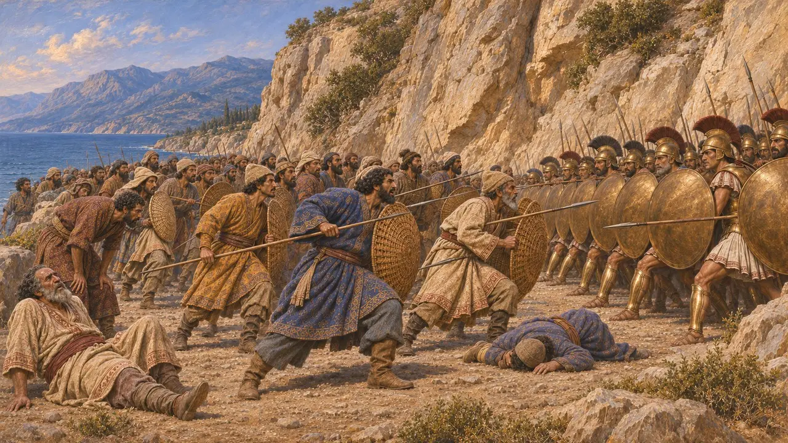
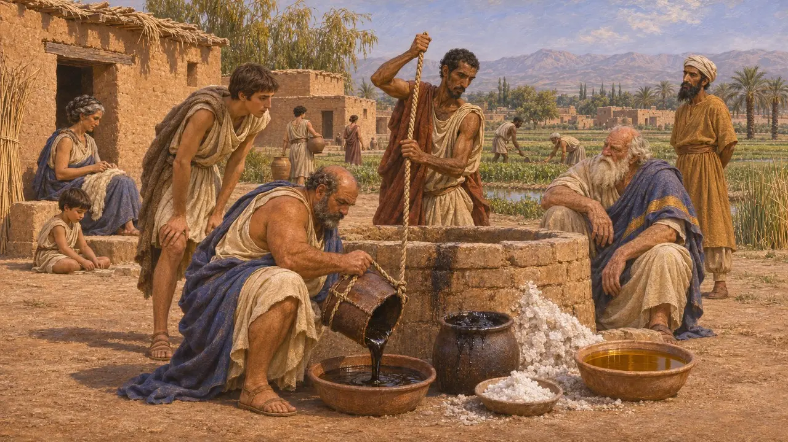

The Cissians
Greek name for the people of the lowlands around Susa, 6th-5th century BCE
In the game: Level 5: The Charter
The Cissians were the people of the lowland country around Susa, as Greek writers named them. Their land held one of the King's chief residences and lay at the end of the Royal Road, and Cissian troops fought in Xerxes' army in 480 BCE. Persian royal inscriptions never use the name: they speak of Elam and Elamites, and how the Greek and Persian terms map onto each other is still discussed.
In the game: The game shows Cissian spearmen in the King's army and Cissian levies at Susa. This simplifies Herodotus, who says Cissians were armed like Persians, with bows as well as spears. 'Cissian' is a Greek label for these people.

A Greek name for an Elamite land
DisputedHerodotus, Aeschylus and later Strabo call the people and country around Susa Cissian, while Darius's inscriptions name the land Elam. Most historians take the Cissians to be the lowland Elamites of Susiana, but some think the Greek term covered only part of that region. The origin of the name is unclear. One suggestion links it to the Kassites of earlier Mesopotamian history, but this remains unproven.
Strabo 15.3.2; Aeschylus, Persians; P. Briant, From Cyrus to Alexander, 2002; D. T. Potts, The Archaeology of Elam, 1999

Susa and the eighth province
Ancient accountIn his list of tribute districts, Herodotus places Susa and the rest of the Cissian land together as the eighth province, paying 300 talents of silver a year. He describes Aristagoras showing the Spartans a map on which Cissia lay beyond the Matieni, with Susa on the Choaspes river. He also says the Royal Road ran through Cissian country on its last stretch to Susa.
Herodotus 3.91; Herodotus 5.49; Herodotus 5.52

Cissians in Xerxes' army
Ancient accountHerodotus says the Cissian infantry of 480 BCE were equipped like the Persians, with bows, short spears, daggers and wicker shields. The difference was that they wore a cloth headband or turban in place of the Persian felt cap. Their commander was Anaphes son of Otanes. Herodotus also lists Cissian horsemen among the cavalry, armed in the same way as their foot soldiers.
Herodotus 7.62; Herodotus 7.86

First into the pass at Thermopylae
Ancient accountHerodotus says Xerxes waited four days at Thermopylae for the Greeks to withdraw. When they did not, he sent the Medes and Cissians against them, ordering that the defenders be taken alive. The attack failed with heavy losses, and only then were the Immortals sent in. The story comes from the Greek side alone, and its picture of the fighting may be shaped by that view.
Herodotus 7.210-211

The Eretrian exiles at Ardericca
Ancient accountAfter Eretria was taken in 490 BCE, Herodotus says Darius settled the captive Eretrians at a place of his own called Ardericca, in Cissian land about 210 stades from Susa. He describes a well near it that produced bitumen, salt and oil. He adds that the Eretrians still lived there and kept their old language in his day.
Herodotus 6.119
Sources
- Herodotus 7.62
- Herodotus 7.210
- Herodotus 3.91
- Herodotus 6.119
- P. Briant, From Cyrus to Alexander, 2002
- D. T. Potts, The Archaeology of Elam, 1999